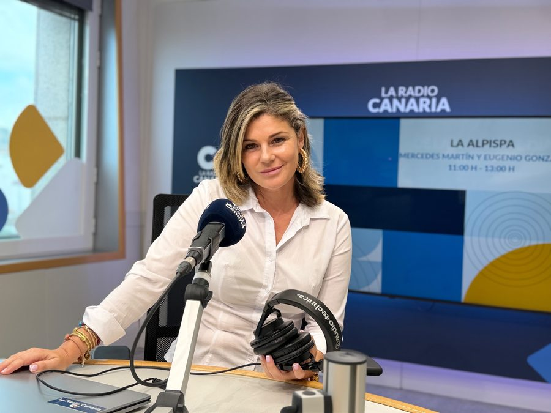

Radio
La voz como herramienta de comunicación. Yaiza Díaz colabora en programas de radio aportando su perspectiva única sobre la actualidad, la cultura y la sociedad.

Tiempo de Alisios
Yaiza Díaz dirige y presenta Tiempo de Alisios, el magacín matinal de La Radio Canaria que acompaña las mañanas de los fines de semana (sábados y domingos, de 08:00 a 11:00h). Un espacio dedicado a la ciencia, la cultura y las iniciativas que nacen en las Islas, con salud, autocuidado, literatura, entretenimiento y agenda de fin de semana, para proyectar una Canarias que va más allá de su condición de destino turístico.
La acompañan Alejandro Torrealba (salud), Raquel González (historia y tradiciones) y Rubén Mayor (sección musical).

Siempre nos quedará París
Yaiza ha colaborado en el magacín sobre inteligencia emocional de Canarias Radio, dirigido y presentado por Rosa Vidal. Un espacio para reflexionar sobre la vida, el amor y la mente.
Escucha una de sus intervenciones:
Momentos en el Estudio

Nueva imagen